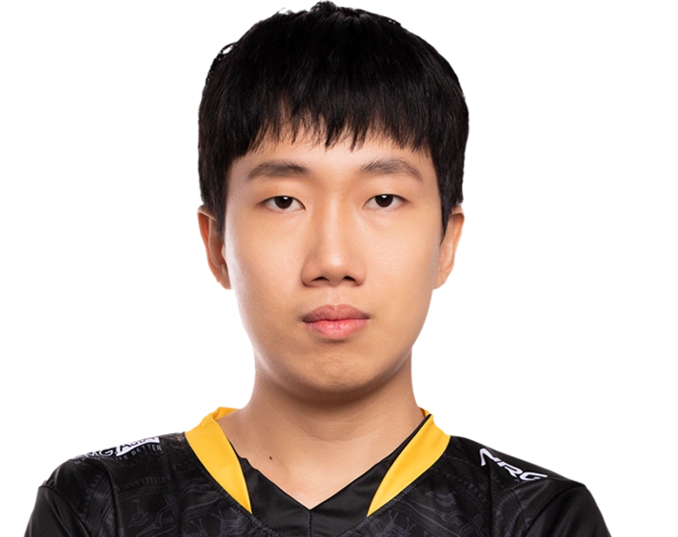
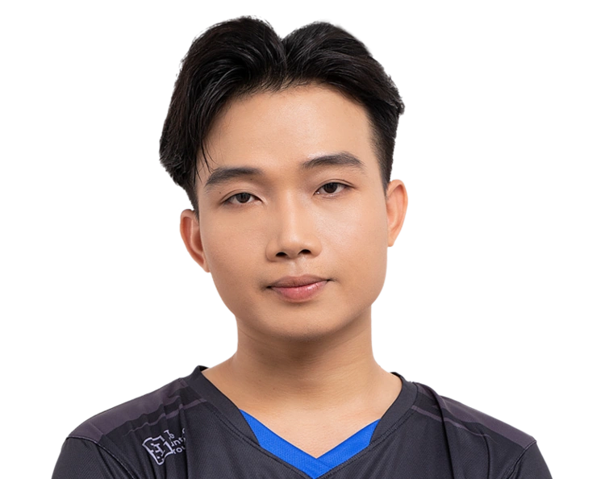
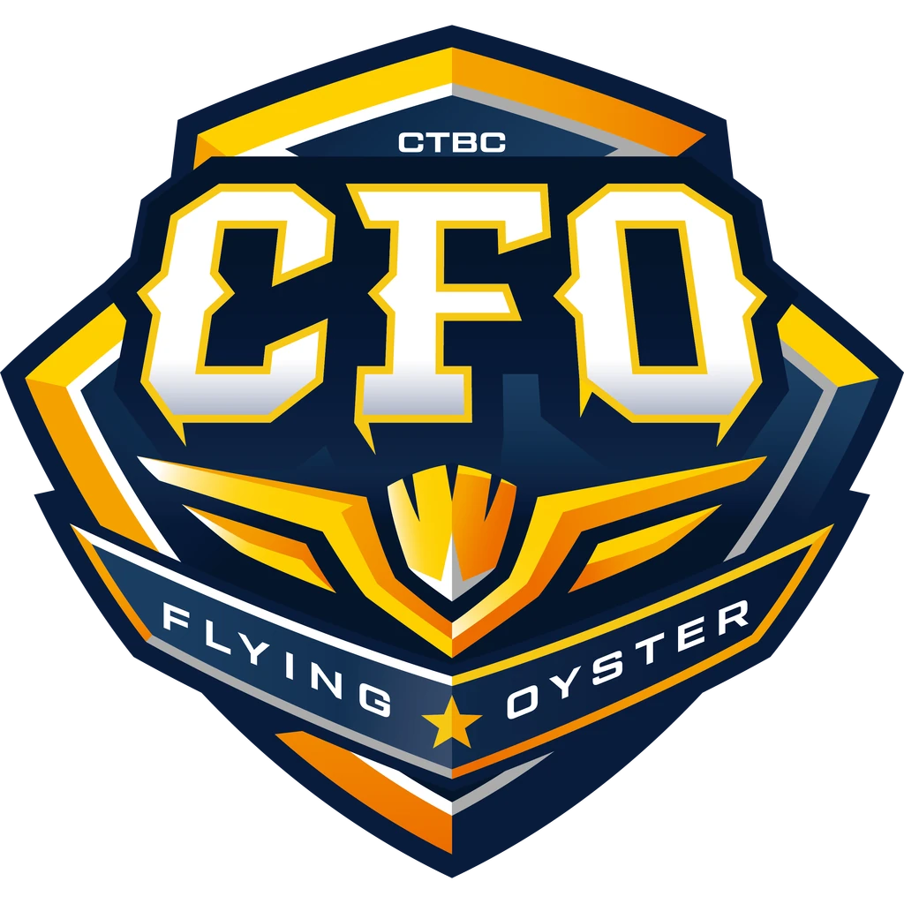

LCP · Asia-Pacífico
En resumen
Los 15 primeros de los 38 jugadores que la LCP (Asia-Pacífico) tiene en el leaderboard, ordenados por el Elo de su mejor cuenta y medidos cuenta por cuenta, porque sus jugadores no están todos en el mismo servidor. La tabla va de Challenger · 2214 LP a Gran Máster · 1593 LP. Medido el 2026-09-03.
| # | Jugador | Equipo | Rol | Elo | Victorias | KDA |
|---|---|---|---|---|---|---|
| 1 | SanSan | MVK | Jungle | Challenger · 2214 LP | 52 % de 1873 | 3.24 |
| 2 | Dire | TSW | Mid | Challenger · 2205 LP | 53 % de 1000 | 2.51 |
| 3 | Taki (VN) | GAM | Support | Challenger · 2154 LP | 53 % de 908 | 3.11 |
| 4 |  Kiaya |
GAM | Top | Challenger · 2060 LP | 52 % de 1194 | 2.17 |
| 5 | Gury | MVK | Jungle | Challenger · 2018 LP | 52 % de 1160 | 3.01 |
| 6 | Citrus | DFM | Jungle | Challenger · 1963 LP | 52 % de 764 | 2.68 |
| 7 | Hizto | TSW | Jungle | Challenger · 1958 LP | 53 % de 795 | 3.40 |
| 8 | Pop9 | DCG | Jungle | Challenger · 1950 LP | 55 % de 578 | 2.52 |
| 9 | Pun | TSW | Top | Challenger · 1893 LP | 51 % de 1107 | 2.00 |
| 10 |  Artemis |
GAM | Bot | Challenger · 1868 LP | 52 % de 1087 | 2.34 |
| 11 | Betty | GZ | Bot | Gran Máster · 1777 LP | 56 % de 487 | 2.85 |
| 12 | 1Jiang | GZ | Top | Gran Máster · 1692 LP | 51 % de 2674 | 2.12 |
| 13 | Gloryy | GAM | Mid | Gran Máster · 1678 LP | 52 % de 956 | 2.77 |
| 14 | Chika | MVK | Mid | Gran Máster · 1653 LP | 51 % de 1447 | 2.38 |
| 15 | POUT | CFO | Mid | Gran Máster · 1593 LP | 53 % de 678 | 2.67 |
De esta liga se publica el Elo, no el Riot ID: las cuentas con nombre se indexan cuando un servidor sigue la liga, y ahora mismo eso está hecho en la LEC.
Cuántos de los jugadores de la LCP tienen cada campeón entre los que más juegan: Bard lo llevan 10, que es el más extendido de la liga. Es presencia, no partidas — el leaderboard dice qué juega cada uno, no cuántas veces.
| Campeón | Jugadores que lo llevan | El de más Elo que lo juega |
|---|---|---|
| Bard | 10 | Taki (VN) |
| Jayce | 8 | Dire |
| Ryze | 8 | Dire |
| Ambessa | 7 | Kiaya |
| Ezreal | 7 | Pop9 |
| Rumble | 6 | Kiaya |
| Aurora | 5 | Dire |
| Camille | 5 | Taki (VN) |

CFO CFOSanSan (MVK, Jungle), con Challenger · 2214 LP. Es el más alto de los 38 jugadores de la LCP que JetaDirectaBot tiene indexados.
38 jugadores en 8 equipos, con unas 131 cuentas de SoloQ entre todos: una media de 3.4 cuentas por jugador. Sale de contar el leaderboard de la LCP, no de una estimación.
Sí. JetaDirectaBot avisa en tu canal de Discord con el campeón, el rol, el Elo y el equipo del jugador de la LCP en cuanto empieza la partida, sin que tengas que pedir nada.
CFO (CFO), DCG (DCG), DFM (DFM), GAM (GAM), GZ (GZ), MVK (MVK), SHG (SHG), TSW (TSW).
En varios: la LCP (Asia-Pacífico) reúne jugadores de regiones distintas, así que el servidor se resuelve cuenta por cuenta en vez de asumir uno para toda la liga. Es la razón por la que un jugador de esta liga puede aparecer con el rango de un servidor y jugar en otro.
JetaDirectaBot publica este aviso en tu canal de Discord —o en tu chat privado— en cuanto el jugador entra en partida, con las 20 ligas del catálogo. Gratis.
El plan gratuito sigue una liga; hasta 4 con los de pago, que es el techo real por el cupo de peticiones de Riot.